Ariadne: A Hotness-Aware and Size-Adaptive Compressed Swap Technique for Fast Application Relaunch and Reduced CPU Usage on Mobile Devices
attention
memory
systems
serving
caching
Ariadne
Background & Motivation
Growing Memory Pressure on Mobile
- Apps demand more memory while users switch >100 times/day
- Systems preserve “anonymous data” (stacks/heaps) for fast relaunch
- Limited DRAM (1-8GB) forces compression of unused data

Current Solution: ZRAM
- Compresses unused data into DRAM region (
zpool) - Avoids slow flash swaps but has limitations:
- Treats all data equally (hot vs. cold)
- Uses fixed 4KB compression chunks
- No locality exploitation
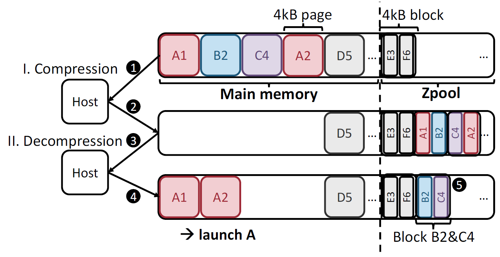
Key Observations from Mobile Workloads: Hot data similarity
- Hot data similarity: 70% overlap between relaunches
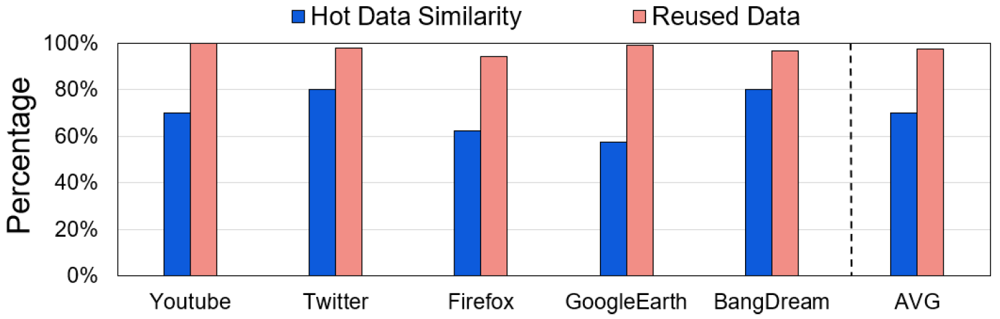
Key Observations from Mobile Workloads
- Hot data similarity: 70% overlap between relaunches
- Compression tradeoffs:
- Small chunks → fast compression (59× faster)
- Large chunks → better ratios (2.3× improvement)
- Small chunks → fast compression (59× faster)
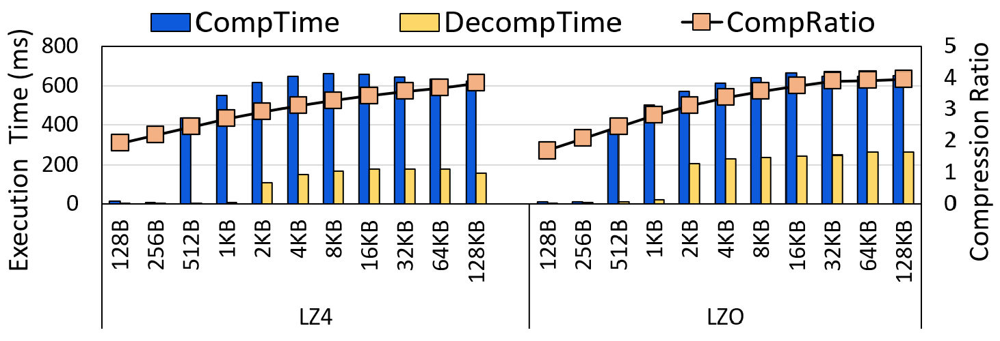
Key Observations from Mobile Workloads
- Hot data similarity: 70% overlap between relaunches
- Compression tradeoffs:
- Small chunks → fast compression (59× faster)
- Large chunks → better ratios (2.3× improvement)
- Small chunks → fast compression (59× faster)
- Strong locality: 86% chance next page accessed
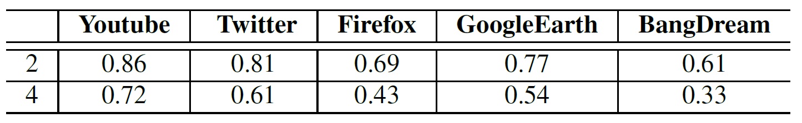
Problems with ZRAM
- Long relaunch latency: 2.1× slower than DRAM-only
- High CPU overhead: 2.6× more than DRAM
- Inefficient compression: Hot data compressed unnecessarily
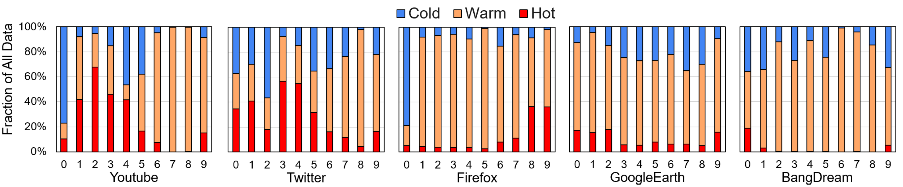
System Design
Ariadne Architecture Overview
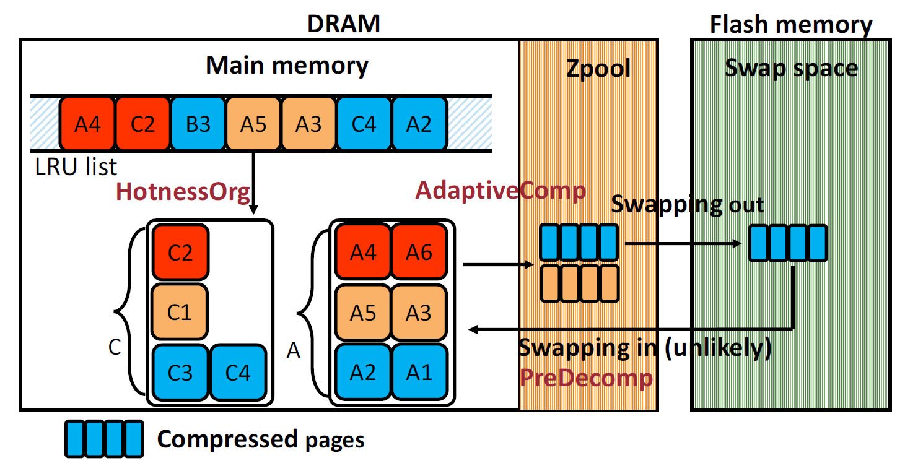
- Hotness-Aware Data Organization
- Size-Adaptive Compression
- Proactive Decompression
Hotness-Aware Data Organization
- HotnessOrg dynamically classifies data:
- Hot (relaunch-critical)
- Warm (post-relaunch)
- Cold (rarely used)
- Hot (relaunch-critical)
- Maintains separate LRU lists per app
- Prioritizes keeping hot data uncompressed
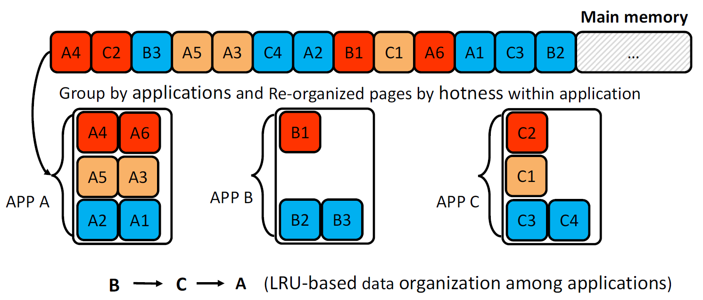
Size-Adaptive Compression
- AdaptiveComp uses optimal chunk sizes:
- Hot/Warm: Small chunks (256B-4KB) → fast decompression
- Cold: Large chunks (16KB-32KB) → high compression ratio
- Avoids one-size-fits-all compromise
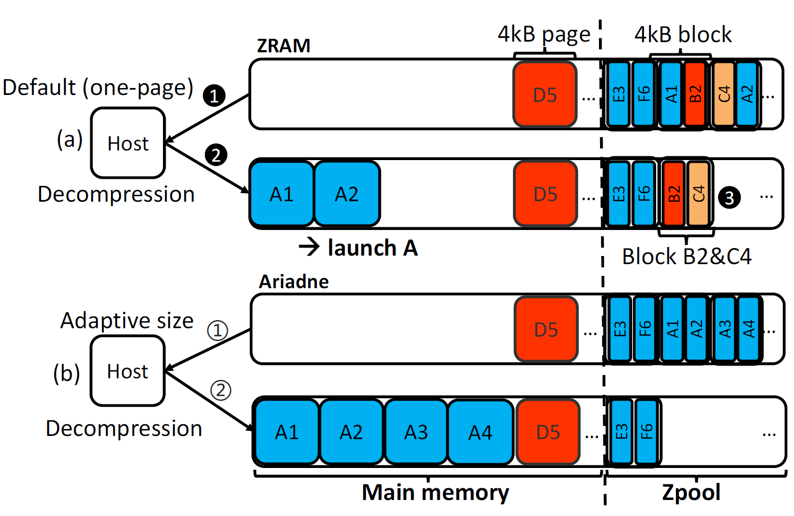
Proactive Decompression
- PreDecomp predicts next needed pages:
- Leverages 86% spatial locality in
zpool - Pre-decompresses 1 subsequent page
- Uses small buffer for prefetched data
- Leverages 86% spatial locality in
- Hides swap-in latency during relaunch
Evaluation
Experimental Setup
- Device: Google Pixel 7 (Android 14)
- Workloads: 10 popular apps (YouTube, Twitter, etc.)
- Metrics: Relaunch latency, CPU usage, compression stats
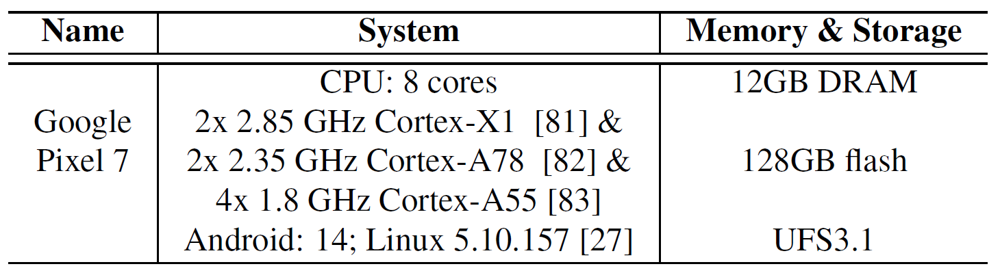
Experimental Setup
- Device: Google Pixel 7 (Android 14)
- Workloads: 10 popular apps (YouTube, Twitter, etc.)
- Metrics: Relaunch latency, CPU usage, compression stats
- Evaluated Methods:
- ZRAM: Android’s default mechanism. Single page size (4KB) + LRU + On-demanding decompression
- DRAM: Ideal
- Ariadne:
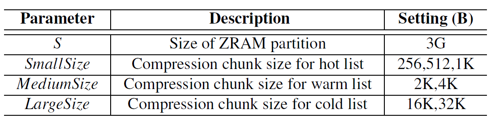
Relaunch Latency Reduction
- 50% faster relaunches vs. ZRAM
- Near-DRAM performance (within 10%)
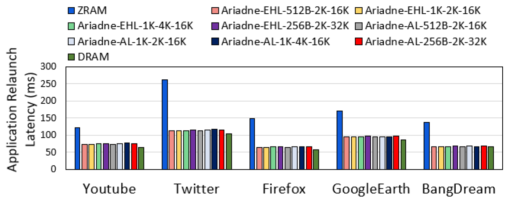
CPU Usage Improvement
- 15% lower CPU for compression/decompression
- Hot-data exclusion reduces CPU by 25-30%
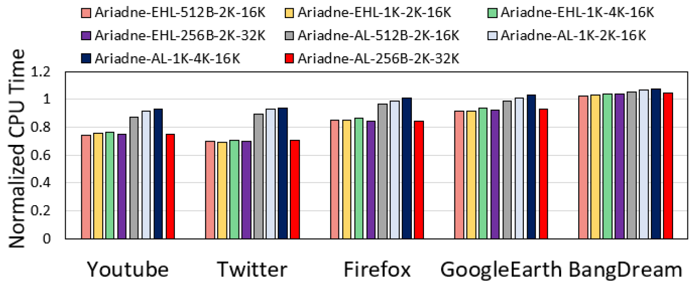
Compression Efficiency
- 60-90% lower decompression latency
- Better compression ratios than ZRAM
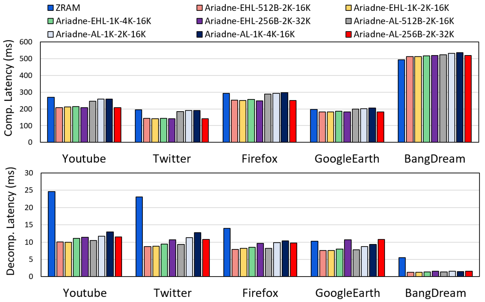
Compression Efficiency
- 60-90% lower decompression latency
- Better compression ratios than ZRAM
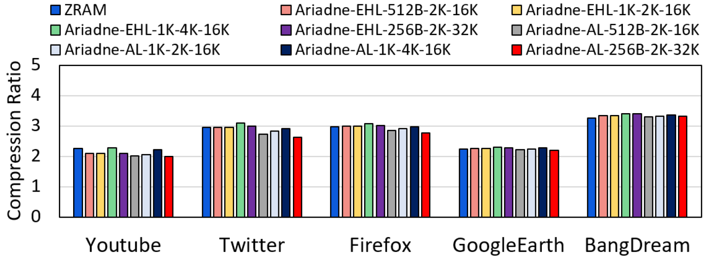
Hotness Identification Accuracy
- 92% accuracy in hot data prediction
- 70% coverage of relaunch-critical data
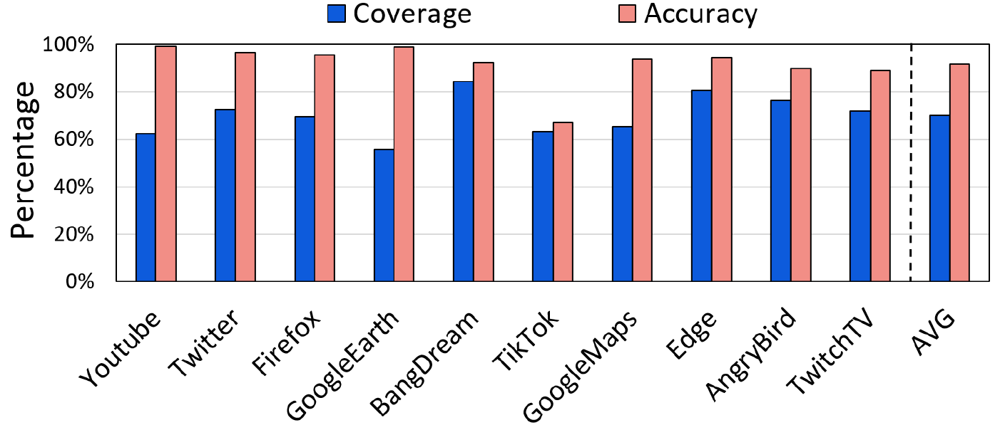